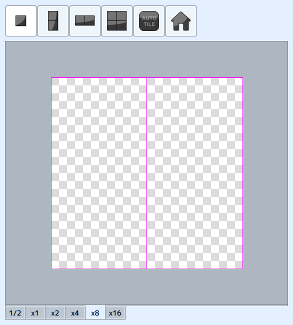
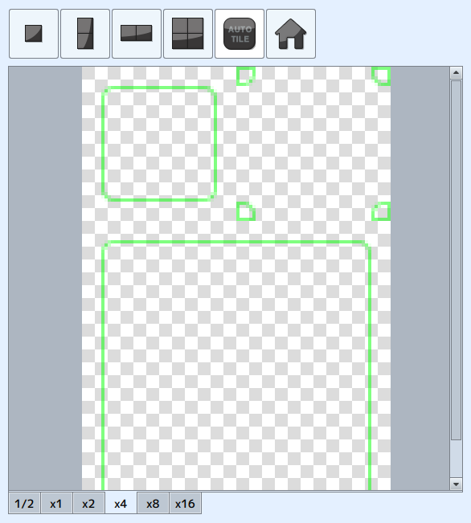
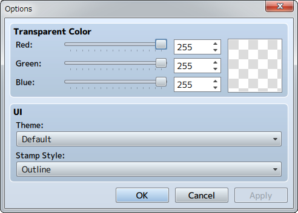
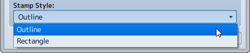

Menu Bar Contents
[File] Menu
- Open MV Project
- Opens the MV [Game.rpgproject] file.
- New User Palette
- Clears the user palette. *Stamps being created will be deleted.
- Import User Palette
- Imports JSON file as a user palette.
- Export User Palette
- Select the folder to export the user palette to as a sprite sheet image and JSON file set.
- Import Images (Updated 11/30/2017)
-
Images can be imported as parts
[Basic Operations] → [Palette]
[Edit] Menu
- Undo
- Cancels the most recent operation on the canvas (20 Max).
- Redo
- Restores canceled operations.
- Clear
- Clears the canvas.
[Display] Menu
- Grid
-
Displays a 24 pixel sized grid.

- Guide
-
Displays template for tileset when auto tile (96x114) is selected.

- Snap
- Attaches stamp to grid.
[Tool] Menu
- Pen Tool
- Selects pen tool.
- Eraser Tool
- Selects eraser tool.
- Stamp Tool
- Selects stamp tool.
- Options
-
Change background color and application looks.

Stamp Style allows the appearance of the stamp to be changed. (Updated 11/30/2017)
- Outline
- Attach a 1px white frame around the stamp.
- Rectangle
- Display a dotted frame of the optimal tile size for the stamp.
[Help] Menu
- Contents
- Displays Help. *Opens in a browser.
- About
- The version of this software will be displayed.